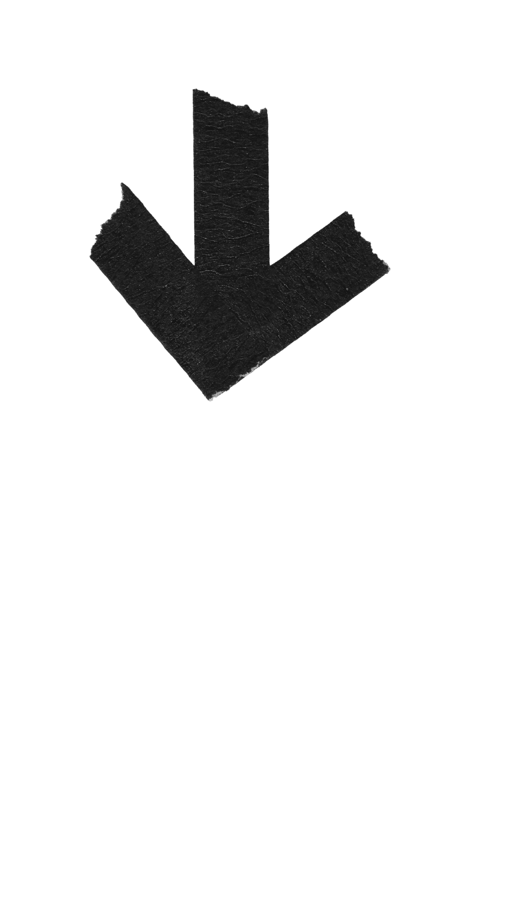

Our objects keep our memories
They hold the stories we cherish
Or the ones we do not remember
Why do they carry these tales?
Whose stories will remain?
Whose stories will be forgotten?
Thanks for participating